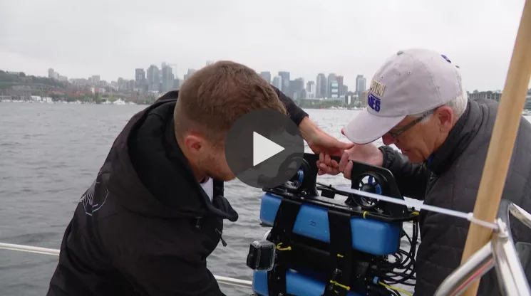
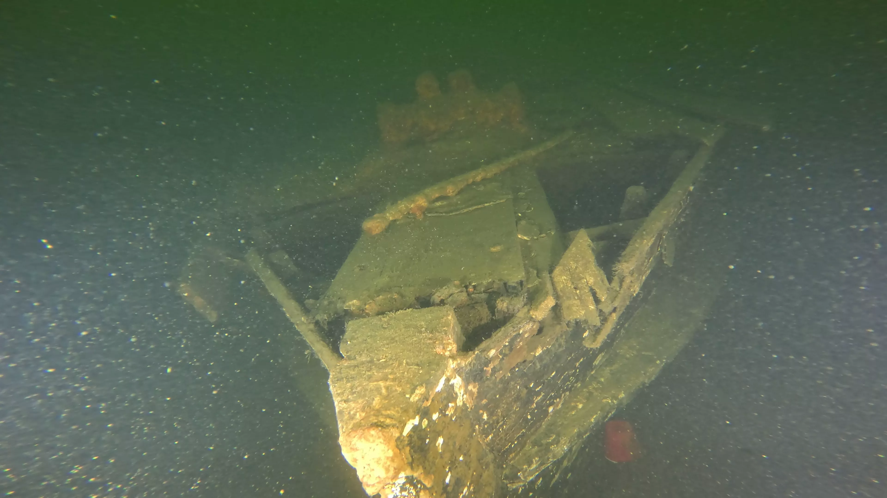
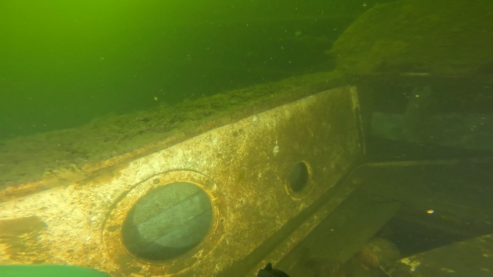
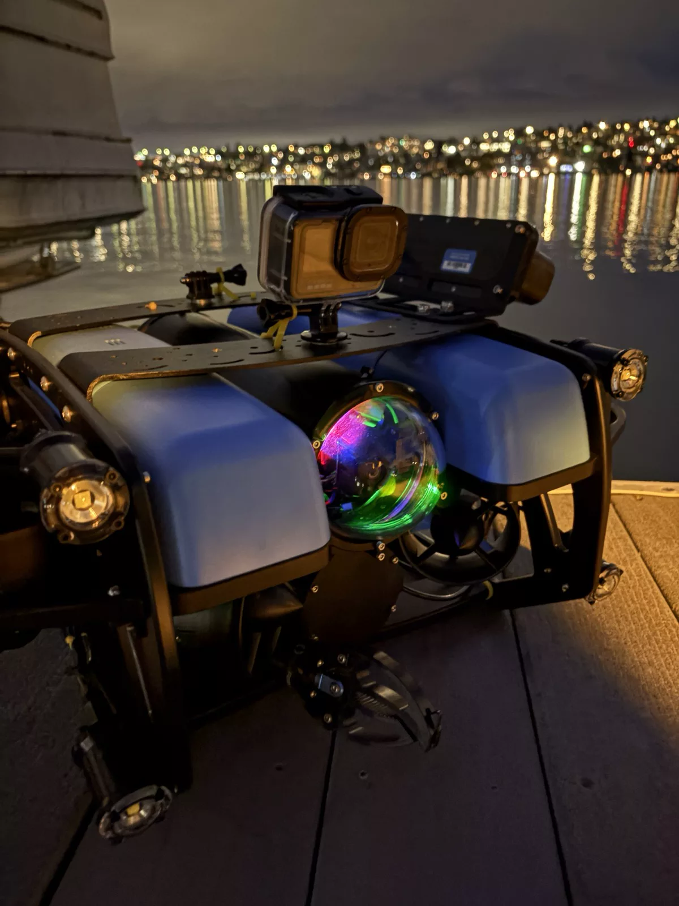
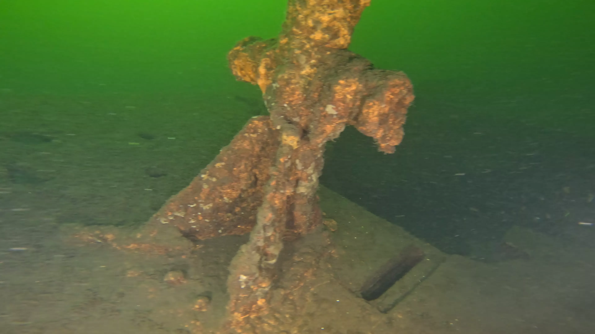

KING5 News
Inside the effort to build Lake Union's underwater archive of shipwrecks
:focal(1920x1097:1921x1098)/https://tf-cmsv2-smithsonianmag-media.s3.amazonaws.com/filer_public/a1/08/a108bb08-6683-484f-9279-c78df22bf661/wreck_0020.webp)
Smithsonian Magazine
An underwater robot explores the hidden shipwreck city beneath this popular urban lake

YouTube
Shipwreck City — Lake Union Dive Footage

Lake Washington Rowing Club
What Lies Beneath — Lake Union's History

New York Post
Underwater robotics expert reveals 'shipwreck city' hidden beneath major West Coast lake

KING5 News
Hidden in plain sight: Robots reveal 'shipwreck city' beneath Lake Union

Fox News
Underwater robotics expert reveals 'shipwreck city' hiding beneath major urban lake

MSN
Underwater robots uncover shipwreck city in Seattle lake

KTVB News
Underwater robots and sonar reveal hidden shipwrecks in Seattle's Lake Union

The Daily Galaxy
Seattle's Lake Union Shipwreck City: The Sunken Vessels Hiding Beneath an Urban Lake